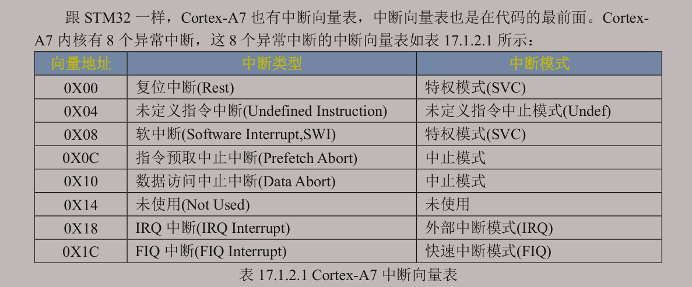
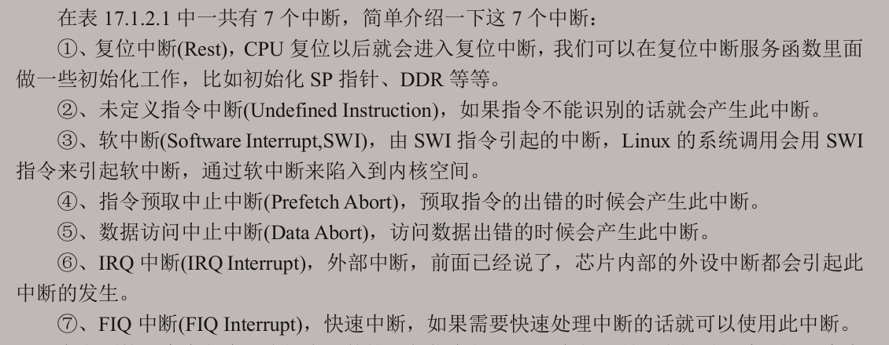
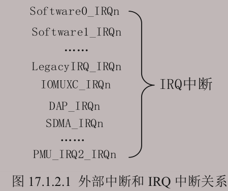
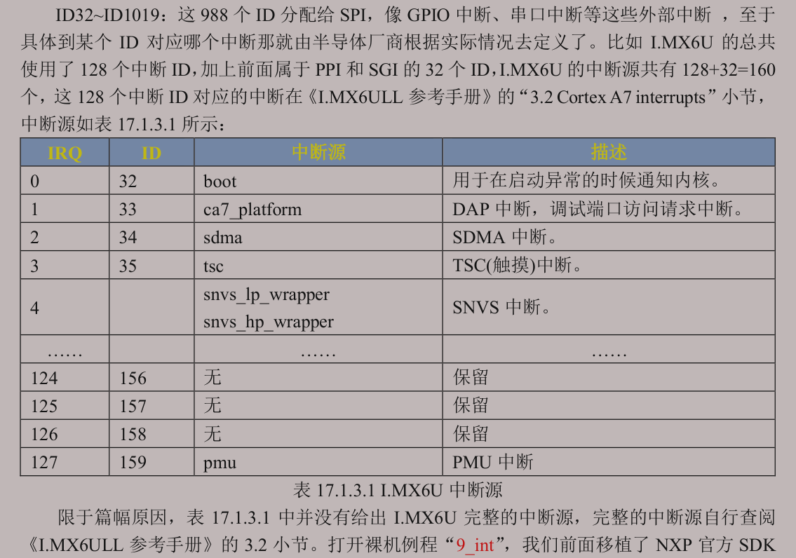

:::info
学习笔记记录，非教程。
:::
Cortex-A中断向量[1]表有8个中断，其中重点关注IRQ。Cortex-A的中断向量表需要用户自己去定义。

各中断的简单介绍：

其中IRQ中断为非向量中断，所有中断共享同一入口，再软件判断来源。
大概是这样：

通过设置中断向量表偏移，指定中断向量表的地址。
类似于STM32的NVIC，CortexA7使用 GIC v2 作为中断控制器，比NVIC更强大因为GIC能处理多核的中断。
ARM GIC 主要由两部分组成：
GIC 的核心流程基本就是三步：
中断的 ID Card。

向量表的“表项”是指令，不是纯地址。
每个向量入口的指令都指向某个具体的处理函数（Reset_Handler、IRQ_Handler 等）。
当发生异常，CPU 硬件会取指执行入口指令 → ldr pc, =xxx → 跳到真正的处理函数。
这样，只要依次写好这些跳转指令，后续再告诉cpu这些指令在哪个位置，就等于告诉 CPU“各种异常该去哪”。
:::danger
中断向量表必须按固定顺序来定义，顺序是由 ARM 硬件架构规定的，不是随便排列的。这样CPU才能正确处理不同的异常
:::
/* 设置中断向量表，当中断来时，CPU就会执行对应指令 */
/* 顺序不能改变，名字可以改变！ */
ldr pc, =Reset_Handler /* 复位中断 */
ldr pc, =Undefined_Handler /* 未定义中断 */
ldr pc, =SVC_Handler /* SVC(Supervisor)中断 */
ldr pc, =PrefAbort_Handler /* 预取终止中断 */
ldr pc, =DataAbort_Handler /* 数据终止中断 */
ldr pc, =NotUsed_Handler /* 未使用中断 */
ldr pc, =IRQ_Handler /* IRQ中断 */
ldr pc, =FIQ_Handler /* FIQ(快速中断)未定义中断 */关闭I、D Cache 和MMU
CP15 是 Cortex-A 系列处理器的 系统控制寄存器集，其中 SCTLR（System Control Register, c1） 控制了处理器的一些核心行为，例如：
| 位 | 功能 |
|---|---|
| M | MMU 使能位（Memory Management Unit） |
| C | 数据缓存使能位 |
| I | 指令缓存使能位 |
| A | 对齐检查（Alignment）使能 |
| Z | 缓存清零 / 压缩乘法指令 |
| V | 高速异常向量表 |
| … | 其他一些调试、异常行为控制 |
在复位后，SCTLR 寄存器的初始值不一定是你想要的运行状态。不同的 SoC 或板级支持包可能默认值不同，有些位可能 默认启用某些功能但不适合裸机启动阶段。
在裸机启动阶段，你通常需要：
禁用 MMU 和缓存：
关闭对齐检查：
保证指令执行顺序一致：
统一系统行为：
如果不重置这些位可能的风险：
访问未定义：
数据不一致：
异常频发：
调试困难：
代码如下：
* 禁用MMU、cache、对齐检查等，配置适合裸机启动的环境，这样的启动代码移植性更好 */
mrc p15, 0, r0, c1, c0, 0 /* 读取CP15系统控制寄存器 */
bic r0, r0, #0x1000 /* 清除第12位（I位）禁用 I Cache */
bic r0, r0, #0x4 /* 清除第 2位（C位）禁用 D Cache */
bic r0, r0, #0x2 /* 清除第 1位（A位）禁止严格对齐 */
bic r0, r0, #0x800 /* 清除第11位（Z位）分支预测 */
bic r0, r0, #0x1 /* 清除第 0位（M位）禁用 MMU */
mcr p15, 0, r0, c1, c0, 0 /* 将修改后的值写回CP15寄存器 */访问CP15 VBAR（Vector Base Address Register）寄存器，该寄存器是专门指定中断向量表偏移首地址的。
dsb（Data Synchronization Barrier）保证所有数据访问指令执行完再继续。isb（Instruction Synchronization Barrier）保证新的 VBAR 设置马上生效，不会被 CPU 指令流水线里的旧指令影响。/* 访问CP15 VBAR寄存器 设置中断向量表偏移 */
ldr r0, =0x80000000
dsb
isb /* 数据同步指令 */
mcr p15, 0, r0, c12, c0, 0
dsb
isb内核工作在不同模式下，User模式和是Sys模式共用sp寄存器，而其他模式是独享一个sp寄存器。
在编译链接后，程序的内存布局通常分为几个主要段：
.text：存放代码（只读）。
.data：存放已初始化的全局/静态变量（初始值不为 0）。
.bss：存放未初始化的或者初始化为 0 的全局/静态变量。
.bss 只在运行时需要分配内存，编译产物中不占用存储空间（只是记录了大小），这样可以减少可执行文件体积。
根据 C 语言标准：
所有未显式初始化的全局变量、静态变量在程序开始执行前必须被初始化为 0。
这意味着：
如果 bss 段中的内容不是全 0，程序可能会读到随机的旧内存内容。
硬件上，RAM 启动后可能是杂乱的值（上电状态、上次运行残留、调试器写入等）。
因此，启动代码（crt0 或汇编 startup.s）通常会在 main() 之前清零 bss 段，保证所有这些变量是干净的 0。
/* 清除bss段 防止未初始化变量等数据访问错误 */
ldr r0, =__bss_start
ldr r1, =__bss_end
mov r2, #0
bss_clear: /* ia: increse after */
stmia r0!, {r2} /* stmia: 从r0所存地址开始，将r2的值写入该地址，写入后地址自动递增 */
cmp r0, r1
ble bss_clear /* less & equal */一旦 CPU 进入 IRQ 模式，中断处理代码首先：
把 lr（中断返回地址）、r0~r3、r12 等易被破坏的寄存器压栈保存。
保存 SPSR（中断进入时的 CPSR 状态），以便中断结束时恢复原任务的运行状态。
目的：防止中断服务过程破坏被中断的程序的寄存器内容和运行状态。
读取 GICC_IAR（Interrupt Acknowledge Register）寄存器。
这个寄存器会返回当前触发的中断 ID（是哪一个外设触发的 IRQ）。
目的：确定是哪个具体中断源发生了 IRQ。
ARMv7-A 的 IRQ 模式不适合直接运行通用 C 代码（栈、寄存器不统一），所以这里切到 SVC 模式。
在 SVC 模式下调用 system_irqhandler（C 写的总中断处理函数）。
system_irqhandler 会根据中断号去调用具体外设的中断处理例程。
目的：统一用 SVC 模式的栈和环境执行中断逻辑，方便用 C 语言写 ISR 分发器。
切回 IRQ 模式。
向 GIC 写 EOIR（End of Interrupt Register），通知 GIC 这个中断处理完成，可以接收新的中断。
从栈中弹出寄存器和 SPSR，恢复进入中断前的状态。
用 subs pc, lr, #4 返回到中断发生前的指令位置继续运行。
目的：
告诉中断控制器“我处理完了”。
让 CPU 完整回到被打断的程序，像中断没发生一样继续执行。
省流版：
当一个程序在 SVC 模式 下运行时，如果来了 IRQ：
IRQ_Handler）。.global _start
/* 以下两个变量在链接脚本中定义 */
.global __bss_start
.global __bss_end
_start:
@ /* 1.设置处理器模式为SVC模式(其实CotexA内核上电默认即为SVC模式故不需要写) */
@ mrs r0, cpsr /* 读取cpsr到r0 */
@ bic r0, r0, #0x1f /* bic bit-clear位清零 */
@ /* 等同于R0 = R0 & (~Operand2) 这个操作数2自己推算*/
@ /* 现在这个操作相当于将r0的前5位清零了 */
@ orr r0, r0, #0x13 /* orr 按位或 */
@ msr cpsr, r0 /* 写入cpsr */
/* 设置中断向量表，当中断来时，CPU就会执行对应指令 */
/* 顺序不能改变，名字可以改变！ */
ldr pc, =Reset_Handler /* 复位中断 */
ldr pc, =Undefined_Handler /* 未定义中断 */
ldr pc, =SVC_Handler /* SVC(Supervisor)中断 */
ldr pc, =PrefAbort_Handler /* 预取终止中断 */
ldr pc, =DataAbort_Handler /* 数据终止中断 */
ldr pc, =NotUsed_Handler /* 未使用中断 */
ldr pc, =IRQ_Handler /* IRQ中断 */
ldr pc, =FIQ_Handler /* FIQ(快速中断)未定义中断 */
Reset_Handler:
cpsid i /* Change Processor State Interrupt or abort Disable irq */
/* 禁用MMU、cache、对齐检查等，配置适合裸机启动的环境，这样的启动代码移植性更好 */
mrc p15, 0, r0, c1, c0, 0 /* 读取CP15系统控制寄存器 */
bic r0, r0, #0x1000 /* 清除第12位（I位）禁用 I Cache */
bic r0, r0, #0x4 /* 清除第 2位（C位）禁用 D Cache */
bic r0, r0, #0x2 /* 清除第 1位（A位）禁止严格对齐 */
bic r0, r0, #0x800 /* 清除第11位（Z位）分支预测 */
bic r0, r0, #0x1 /* 清除第 0位（M位）禁用 MMU */
mcr p15, 0, r0, c1, c0, 0 /* 将修改后的值写回CP15寄存器 */
/* 访问CP15 VBAR寄存器 设置中断向量表偏移 */
ldr r0, =0x80000000
dsb
isb /* 数据同步指令 */
mcr p15, 0, r0, c12, c0, 0
dsb
isb
/* 清除bss段 防止未初始化变量等数据访问错误 */
ldr r0, =__bss_start
ldr r1, =__bss_end
mov r2, #0
bss_clear: /* ia: increse after */
stmia r0!, {r2} /* stmia: 从r0所存地址开始，将r2的值写入该地址，写入后地址自动递增 */
cmp r0, r1
ble bss_clear /* less & equal */
/* 设置各个模式下的栈指针，
* 注意：IMX6UL的堆栈是向下增长的！
* 堆栈指针地址一定要是4字节地址对齐的！！！
* DDR范围:0X80000000~0X9FFFFFFF
*/
/* 进入IRQ模式 */
mrs r0, cpsr
bic r0, r0, #0x1f /* 将r0寄存器中的低5位清零，也就是cpsr的M0~M4 */
orr r0, r0, #0x12 /* r0或上0x13,表示使用IRQ模式 */
msr cpsr, r0 /* 将r0 的数据写入到cpsr_c中 */
ldr sp, =0x80600000 /* 设置IRQ模式下的栈首地址为0X80600000,大小为2MB */
/* 进入SYS模式 */
mrs r0, cpsr
bic r0, r0, #0x1f /* 将r0寄存器中的低5位清零，也就是cpsr的M0~M4 */
orr r0, r0, #0x1f /* r0或上0x13,表示使用SYS模式 */
msr cpsr, r0 /* 将r0 的数据写入到cpsr_c中 */
ldr sp, =0x80500000 /* 设置SYS模式下的栈首地址为0X80400000,大小为2MB */
/* 进入SVC模式 */
mrs r0, cpsr
bic r0, r0, #0x1f /* 将r0寄存器中的低5位清零，也就是cpsr的M0~M4 */
orr r0, r0, #0x13 /* r0或上0x13,表示使用SVC模式 */
msr cpsr, r0 /* 将r0 的数据写入到cpsr_c中 */
ldr sp, =0X80400000 /* 设置SVC模式下的栈首地址为0X80200000,大小为2MB */
cpsie i /* 打开全局中断 */
/* 跳转到main函数 */
b main
/* 未定义中断 */
Undefined_Handler:
ldr r0, =Undefined_Handler
bx r0
/* SVC中断 */
SVC_Handler:
ldr r0, =SVC_Handler
bx r0
/* 预取终止中断 */
PrefAbort_Handler:
ldr r0, =PrefAbort_Handler
bx r0
/* 数据终止中断 */
DataAbort_Handler:
ldr r0, =DataAbort_Handler
bx r0
/* 未使用的中断 */
NotUsed_Handler:
ldr r0, =NotUsed_Handler
bx r0
/* IRQ中断！重点！！！！！ */
IRQ_Handler:
/* 保护现场 */
push {lr} /* 保存lr地址 */
push {r0-r3, r12} /* 保存r0-r3，r12寄存器 */
mrs r0, spsr /* 读取spsr寄存器 */
push {r0} /* 保存spsr寄存器 */
/* 读取GIC控制器基地址 */
mrc p15, 4, r1, c15, c0, 0 /* 从CP15的C0寄存器内的值到R1寄存器中
* 参考文档ARM Cortex-A(armV7)编程手册V4.0.pdf P49
* Cortex-A7 Technical ReferenceManua.pdf P68 P138
*/
add r1, r1, #0X2000 /* GIC基地址加0X2000，也就是GIC的CPU接口端基地址 */
/* 查询中断号 */
ldr r0, [r1, #0XC] /* GIC的CPU接口端基地址加0X0C就是GICC_IAR寄存器，
* GICC_IAR寄存器保存这当前发生中断的中断号，我们要根据
* 这个中断号来绝对调用哪个中断服务函数
*/
push {r0, r1} /* 保存r0,r1 */
cps #0x13 /* 进入SVC模式，允许其他中断再次进去 */
push {lr} /* 保存SVC模式的lr寄存器 */
ldr r2, =system_irqhandler /* 加载C语言中断处理函数到r2寄存器中*/
blx r2 /* 运行C语言中断处理函数，带有一个参数，保存在R0寄存器中 */
pop {lr} /* 执行完C语言中断服务函数，lr出栈 */
cps #0x12 /* 进入IRQ模式 */
pop {r0, r1}
str r0, [r1, #0X10] /* 中断执行完成，写EOIR，相当于确认中断执行完成 */
pop {r0}
msr spsr_cxsf, r0 /* 恢复spsr */
pop {r0-r3, r12} /* r0-r3,r12出栈 */
pop {lr} /* lr出栈 */
subs pc, lr, #4 /* 将lr-4赋给pc */
/* FIQ中断 */
FIQ_Handler:
ldr r0, =FIQ_Handler
bx r0
loop:
b loop中断向量，英文名为Interrupt Vector，在早期计算机体系结构里，“vector”常被用作“指针/地址索引”的意思，所以”向量“实际上就是地址指针的意思。 ↩︎